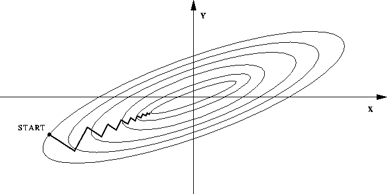

Linear Regression II Exercise Solutions (linreg2.tar.gz - not available yet)
These notes are based on Andrew Ng's online course found hereDefinitions
$/n_m/$
$/x/$
$/y/$
$/h : x \rightarrow y/$
Hypothesis: The function used to map $/x/$ to $/y/$ for predictions
$/(x^{(i)}, y^{(i)})/$
The $/i^{th}/$ training example
Feature Scaling
Remember how $/J(\theta)/$ (least squares) is a parabolic function. If, say, there are two features $/x_1: [0, 2000]/$ and $/x_2: [0, 4]/$, the parabola will be elongated in one direction to the proportion of $/\frac{x_2}{x_1} = \frac{2000}{4}/$. Gradient descent will then be prone to oscillations. The countour graph below captures the gist of it.

One possible fix is to scale/normalize all the features: $$x^{(j)} = \frac{x^{(j)}}{\max \{\forall j: x^{(j)}\}}$$
It is also possible to normalize the mean: $$ x^{(j)} = \frac{x^{(j)} - E(x)}{\max \{\forall j: x^{(j)}\}} $$ Which makes the mean 0.
We can scale by dividing the standard deviation or use max - min. So many options. As long as they're similarly proportioned.
Feature Selection and Polynomial Regression
At times in linear regression, we have a choice of what features we can use. For example, we can calculate the price of a house via its lot size: $$h_\theta(width, height) = \theta_0 + \theta_1 \cdot width + \theta_2 \cdot height$$ Or we can calculate it based on the area, which may be a much better metric: $$h_\theta(width, height) = \theta_0 + \theta_1 \cdot width \cdot height$$
At times polynomial regression may be desirable over lines: $$h(x) = \theta_0 + \theta_1 x + \theta_2 x^2 + \cdots$$ Don't forget to normalize $/x/$, $/x^2/$, and $/x^3/$ to comparable sizes for gradient descent. There's also nothing wrong with choosing models in the form of $$h(\theta) = \theta_0 + \theta_1 x^{a_1} + \theta_2 x^{a_2} + \cdots$$
Normal Equation (analytic solution)
It is possible to solve least squares analytically, without gradient descent. With some kindergarten math, we know that at the minimum, the derivative is 0. So, beginning with:
Define:
$$\mathbf X = \begin{bmatrix} 1 & x^{(0)}_1 & x^{(0)}_2 & \cdots \\ 1 & x^{(1)}_1 & x^{(1)}_2 & \cdots \\ \vdots & \vdots & \vdots & \ddots \\ 1 & x^{(n_m)}_1 & x^{(n_m)}_2 & \cdots \end{bmatrix}, \boldsymbol\theta = \begin{bmatrix} \theta_0 \\ \theta_1 \\ \theta_2 \\ \vdots \end{bmatrix}, \mathbf Y = \begin{bmatrix} y^{(0)} \\ y^{(1)} \\ y^{(2)} \\ \vdots \\ y^{(n_m)} \end{bmatrix}$$Gradient descent step:
$$ \boldsymbol \theta := \boldsymbol \theta - \alpha \frac{1}{n_m} \mathbf X^\top (\mathbf X \boldsymbol \theta - \mathbf Y) $$Instead solve the partial derivative when set to 0:
$$ \mathbf X^\top (\mathbf X \boldsymbol \theta - \mathbf Y) = \mathbf 0$$ $$ \mathbf X^\top \mathbf X \boldsymbol \theta - \mathbf X^{\top} \mathbf Y = \mathbf 0 $$ $$ \mathbf X^\top \mathbf X \boldsymbol \theta = \mathbf X^{\top} \mathbf Y $$ $$ \boldsymbol \theta = (\mathbf X^\top \mathbf X)^{-1} \mathbf X^{\top} \mathbf Y $$Where $/\mathbf X^\top \mathbf X/$ can be singular:
-
Too many features (i.e. $/n_m \leq n/$).
Solution: regularization or feature deletion. - Redundant features (i.e. Linearly dependant features).